SPICY CHICKEN AND BANANA BLOSSOM (OR CABBAGE) SALAD WITH FRIED SHALLOTS, GARLIC, AND LEMONGRASS
|
Yield Serves 4 |
Active Time 1 hour Total Time 1 hour |
If possible, use smaller, sweeter Thai shallots and garlic for the recipe. If you’re using Thai garlic, you can leave the skins on the individual cloves when frying. Makrut lime leaves can be found at Thai supermarkets. Fresh lemongrass can be found at most Asian markets and in the specialty produce section of many Western supermarkets.
Thai chiles can vary in heat. Taste a tiny bit of your chiles before smashing and adjust the quantity accordingly. The dressing should be quite hot to balance out its sweetness. Palm sugar can be found in Thai markets. If unavailable, substitute with brown sugar.
This salad can be made with chicken poached according to the directions on here or with any leftover chicken meat.
Banana blossom can be found at East Asian or Indian grocery stores. It is wonderful in place of the cabbage in this recipe, with a mildly bitter, astringent flavor.
This salad is one that I first made when staying with my good friend Yvonne Ruperti and her husband, Hallam, at their home in Singapore, near the Tanjong Pagar neighborhood. Yvonne and I had spent years together as roommates and coworkers at Cook’s Illustrated, so I’d be damned if I missed the opportunity to spend some time in the kitchen with one of my favorite people.
Banana blossom and chicken salad is a not-uncommon dish found mostly in the central Thai cooking of Bangkok. You won’t find it on every street corner or in every restaurant, but it shows up regularly enough. The classic version is made with poached shredded chicken, thinly sliced banana blossom, raw shallots, coconut, and a hot-sour-sweet dressing flavored with garlic, chiles, palm sugar, and fish sauce. My version starts off similarly but strays a bit, and when I make it at home, where banana blossoms are hard to come by, more frequently than not I’ll just use crunchy cabbage instead.
The first thing I did was to add a whole slew of fried shallots to the salad base. They lose some of their crispness once dressed, but in return they give it a unique sweet-savory flavor. I added a bunch of garlic cloves, which I’d quickly smashed in the mortar and pestle, as well as some thinly sliced lemongrass and lime leaves. Into the oil they went (if you can’t find them, any citrus leaf will work). Finally, I fried up some peanuts to form the flavor base for my dressing. This left me with a bowl full of fried goodies (“No, Adri, those aren’t for eating yet”), plus some flavorful frying oil to add to my dressing for extra flavor.
For the dressing, I decided to forgo the coconut milk—there’s already plenty of richness going on here with the fried things—instead making a sweet-spicy paste of garlic, chiles, and palm sugar (props to Hallam for some epic mortar and pestle pounding), then thinning it out with fresh lime juice and sugar.
When making salads like this, it’s important to dress things in the right order. I start with the chicken, which is the most absorbent and can benefit from a bit of extra time to soak up flavors between its fibers. Next I add the cabbage along with a handful of fresh herbs (mint and cilantro). Finally, I add the fried things just before serving, saving some to sprinkle over the salad, so that they retain at least a hint of their crunchiness.
INGREDIENTS
For the Fried Aromatics:
½ cup (120 ml) peanut, rice bran, or other neutral oil
3 medium European shallots or 8 to 12 Thai shallots, thinly sliced (about 4½ ounces/130 g; see Notes)
9 medium standard garlic cloves or 12 to 15 Thai garlic cloves, roughly smashed in a mortar and pestle (about 3 tablespoons/30 to 40 g; see Notes)
2 fresh lemongrass stalks, outer leaves removed, pale lower 4 inches only, thinly sliced crosswise (about ¼ cup; see Notes)
4 makrut lime leaves, stems discarded, sliced as thinly as possible (see Notes)
Kosher salt
For the Dressing:
4 to 10 fresh Thai bird chiles, roughly chopped (see Notes)
9 medium standard garlic cloves or 12 to 15 Thai garlic cloves, roughly smashed in a mortar and pestle (about 3 tablespoons/30 to 40 g; see Notes)
3 tablespoons (about 25 g) palm sugar (see Notes)
2 tablespoons (30 ml) Thai fish sauce, plus more to taste
2 tablespoons (30 ml) fresh lime juice (from 2 limes), plus more to taste
1 tablespoon (6 g) dried crushed Thai chile powder (or red chile flakes), plus more to taste
For the Salad:
2 poached chicken breast halves, skin and bones removed (12 to 16 ounces/340 to 450 g total boneless, skinless breast meat; see Notes)
⅓ cup (10 g) roughly chopped fresh cilantro leaves and tender stems
⅓ cup (10 g) roughly chopped fresh mint leaves
1 small head cabbage (about 12 ounces/340 g), cored and thinly sliced, or 1 small banana blossom (about 1 pound/450 g), prepared according to directions
½ cup (about 1½ ounces/50 g) roasted or fried peanuts, roughly crushed in a mortar and pestle
DIRECTIONS
1 For the Fried Aromatics: Heat oil in a large wok over high heat until shimmering (it should register around 375°F/190°C on an instant-read thermometer). Add the shallots and cook, stirring constantly, until golden brown, about 2 minutes. Quickly remove with a fine-mesh strainer or slotted spoon and transfer to a paper-towel-lined bowl.
2 Repeat the frying with the garlic, followed by the lemongrass, and then the lime leaves, adding each fried aromatic to the same bowl with the shallots. Season the fried aromatics with salt and toss to combine.
3 For the Dressing: Add the fresh Thai chiles and garlic to the bottom of a mortar and pestle. Add 1 tablespoon of the palm sugar. Pound until a nearly smooth paste is formed (this will take a while; be patient). Add the remaining 2 tablespoons palm sugar and pound until incorporated. Add the fish sauce, lime juice, and dried chiles and stir to incorporate.
4 For the Salad: Shred the chicken into bite-sized pieces and add to the bottom of a large bowl. Add the dressing and reserved frying oil and toss to incorporate. Add the chopped cilantro, mint, cabbage, and peanuts. Reserve 2 tablespoons of the mixed fried aromatics and add the rest to the bowl with the salad. Toss to combine, then taste and adjust the flavor with more fish sauce, lime juice, or dried chiles as necessary. Transfer to a serving bowl, top with the remaining fried aromatics, and serve immediately.
How to Prepare the Banana Blossom
Prepare the banana blossom by filling a large bowl with 2 quarts (2 l) water and add ¼ cup (60 ml) white vinegar or lemon juice. Lay a clean kitchen towel on the surface of the water, letting it soak. Peel off and discard the tough outer layers of the blossom until you reach the pale pink inner layers. Split the blossom in half lengthwise, then slice crosswise as thin as possible. Immediately transfer the slices to the bowl and lay the towel over them to keep them submerged. When ready to add to the salad, remove the towel and skim off and discard any tiny buds that float on the surface. Dry the slices on a clean kitchen towel or in a salad spinner and proceed.
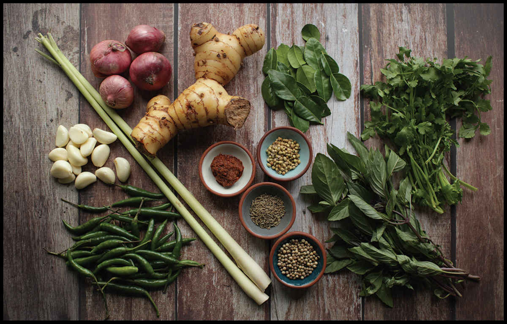
How to Make Thai Curries
Often when I approach adapting a foreign recipe for a largely American audience, I do what many publications do: I spend a lot of time working out how to replace tricky-to-find ingredients. My conclusion? If that’s what you’re looking for, using premade curry pastes is the way to go. They pack a lot of difficult-to-find ingredients into a single, easily purchased jar that lasts virtually forever in the fridge. (I use Maesri or Mae Ploy brand, mostly). Even with store-bought curry paste, you can make a decent curry. That said, nothing compares with the flavor (or muscle- and character-building effort) of homemade curry pastes.
What we refer to as “Thai curry” in the West is what is known as kaeng in Thailand, the collective term for dishes made with curry paste and intended to be eaten with rice. While the prototypical Thai curry may resemble a rich soup, there are watery curries, stew-like curries, and even dry curries (such as Pad Prik King, on here). Many curries use coconut milk, others use broth or water, some use animal blood for thickening. Thai curries can be long-cooked, meat-packed stews, or they can be quickly simmered dishes with seafood or vegetables.
Perhaps the one unifying trait of all Thai-style curries is the use of a moist curry paste made by pounding together spices and aromatics in a heavy mortar and pestle. And therein lies its difficulty. Doing it the traditional way is tough, forearm-breaking labor, especially if you are aiming for a smooth, fine texture.
But wait, you may be thinking. Isn’t this exactly what technology is for? Why would we bother using a mortar and pestle when we’ve got food processors and blenders at our disposal?
I am not the type to be enamored of old-fashioned techniques when modern methods can get the job done faster or better, so I decided to put it to the test.
THE MORTAR AND PESTLE IS CURRY PASTE’S BEST FRIEND
To start, I made a few batches of Thai red curry paste as well as a few batches of Italian pesto side by side in a food processor and in a mortar and pestle, then gave them to tasters for a blind taste test. Certainly the batches made in the food processor came together faster, but tasting them side by side with the version made in the mortar and pestle showed that the food processor batches had a grainier, almost gritty texture, while the batch made in the mortar and pestle had a smoother, silkier texture, albeit with a few larger chunks of aromatics intact. Flavor-wise, the differences were even more stark: the mortar and pestle versions were much more aromatic than the food processor batch.
Thinking that perhaps the food processor just needed a bit more time to break down ingredients, I let the processor run with the curry paste in it for up to a full three minutes. It made no difference. After the first 45 seconds or so, the paste is broken down about as far as it’s ever going to break down.
So what gives? Why does a food processor produce inferior results?
Well, it’s because a mortar and pestle crushes cells rather than shearing them. Vegetable cells are firm sacs, like inflated water balloons. Inside those balloons is where the flavor is. If it helps, think of your vegetable cells as a stack of shipping containers, each with a shipment of juice. A food processor has a sharp whirling blade that shears those containers apart. It may well cut open a few of them, but more often than not, it simply batters them so that they separate from each other while staying intact individually. It’s sort of like a hurricane blowing through the shipyard. A mortar and pestle, on the other hand, is like a full-on Godzilla-style Kaiju attack. It doesn’t just separate cells, but totally crushes them, releasing their cargo.
If flavor is your goal, you’ve got to release your inner Godzilla and crush those aromatics like a Tokyo skyline.
THE FOOD PROCESSOR IS THE MORTAR AND PESTLE’S FRIEND
When exploring ways to make making Thai curry paste easier, my first thought was to use a hybrid approach. Could I start my curry paste in a mortar and pestle to get some of the heavy bashing out of the way, then finish it in the food processor to finish the job? Or perhaps the other way around?
I tried making the same batch of curry paste by four different methods:*
1 •Using only a food processor
2 •Using only a mortar and pestle
3 •Starting with the mortar and pestle and finishing in the food processor
4 •Starting in the food processor and finishing with the mortar and pestle
I timed how long each method took, then tasted the final results. As far as ease of production goes, the food processor wins by a long shot. It can reduce a pile of fresh and dried aromatics to a smooth curry paste in just a couple of minutes, requiring only a few scrapes with a rubber spatula during the process. By contrast, making a curry paste 100% with a mortar and pestle, as I’ve advised in the past, is a much more laborious process that typically takes at least 5 to 10 minutes, but can take much longer with a smaller mortar and pestle or a paste pounder who isn’t 100 percent invested in the process. Fifteen to 20 solid minutes of pounding is not unusual for a very smooth paste.
For the combined methods, I employed a one-minute pounding session along with two minutes inside the food processor.
Flavorwise, there were some clear differences. As expected, the paste formed 100% in the food processor had the least developed flavor. Of the two combinations, the one that I started in the food processor and finished by pounding was almost indistinguishable from the one that was made 100 percent in the food processor. Once those aromatics are broken down and in a semiliquid suspension, it’s hard to get them to crush underneath the pestle. They end up just squishing out to the sides.
But the version I started with the mortar and pestle and finished in the food processor? That was the one! The flavor was almost but not quite as good as using a mortar and pestle alone (I got plenty of cell breakdown during the pounding phase), but the advantage in time and effort was tremendous.
In the future, I’ll be sticking to using 100 percent mortar and pestle when I have the time and energy (or an extra set of kitchen hands to pass the task off to), but on busy nights I’ll be pulling out both tools to make curry pastes with almost all the flavor at a fraction of the effort.
THE FREEZER IS THE FOOD PROCESSOR’S BEST FRIEND
I’ll cut to the chase instead of burying the lede here: in many cases, freezing fresh aromatics before pounding them in a mortar and pestle will produce tastier results.
I know, I find it hard to believe myself. But hear me out, because there’s a good explanation for all of this.
This whole idea came about because my refrigerator was broken. Every couple of weeks, it would decide to kick its compressor into high gear, and everything on the bottom shelf would end up freezing solid. One time it was a knob of fresh ginger and a few stalks of fresh lemongrass. I ended up deciding to use that frozen-then-thawed lemongrass and ginger in a Thai-style curry paste and was frankly surprised at how easily they incorporated into the mix in my mortar and pestle. Then it occurred to me: perhaps freezing aromatics is a good thing?
My reasoning went like this: In many cases, we want our vegetables and herbs to stay relatively bright and intact. We want crunch, we want bite, we want texture. But sometimes we want the opposite—we want our vegetables and herbs to get completely pulverized. We want them bruised, beaten, and squeezed until every single one of their cells bursts open and releases its fragrant juices. So where does freezing come in? Freezing can accomplish something similar to what the mortar and pestle can achieve. Rather than crushing from the outside, though, it causes cells to tear apart from the inside, as liquid water expands and forms jagged ice crystals. Vegetables and aromatics that have been frozen and then thawed are limp and bruised-looking.
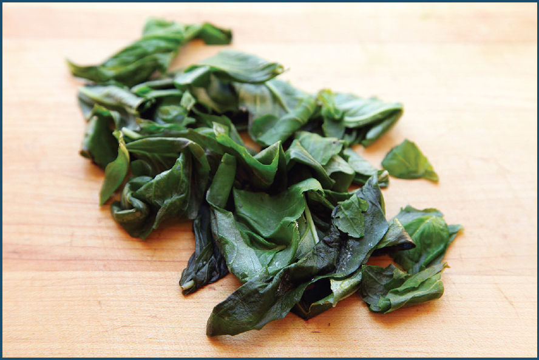
So, I figured, if freezing causes cells to rupture, and rupturing cells is our goal when making curry pastes and pestos, could it actually improve the results? Moreover, could it help produce extra-tasty pastes in the food processor or mini-chopper, no mortar and pestle required?
To test this, I first made three different batches of pesto using my colleague Daniel Gritzer’s fantastic recipe (you can find it for free on Serious Eats). The first I made the traditional way, using fresh basil and a mortar and pestle alone. The second I made in a food processor, using fresh basil. The third I made in the food processor using basil that I’d placed in the freezer overnight and allowed to thaw for a few minutes at room temperature. (Basil has such a high surface-area-to-volume ratio that it freezes and defrosts in moments.)
The results?
The pesto made in the mortar and pestle was definitely the best of the three, boasting a creamy, emulsified texture and really bright, vibrant basil flavor.† The batch made from fresh basil in the mini-chopper was easily the worst, with a sort of gritty texture and muted flavor. I wouldn’t kick it out of my pasta bed, but it wouldn’t be my first choice for a garlic-breath date night, either. The third batch—the one made with frozen basil in the mini-chopper—was somewhere in the middle. It had the same great, creamy texture as the pesto made with the mortar and pestle, and its flavor was also a big improvement over that of its nonfrozen counterpart, though it wasn’t quite as flavor-packed as the version made with the mortar and pestle.
For completeness, I made another batch in which I froze the basil, then crushed it with the mortar and pestle. I didn’t find any serious advantages there for pesto, but for Thai-style curry pastes, it made the job of breaking down piles of aromatics into a fine paste significantly faster with no reduction in flavor.
In retrospect, this shouldn’t have surprised me: I use the exact same logic when freezing vegetables for my gazpacho, and it works wonders there. This is great news if you don’t make frequent trips to the Thai market for those specialty curry paste ingredients. You can buy galangal, lime leaf, turmeric, and lemongrass in bulk, chop it up roughly, and store it in the freezer, where it will not only keep its flavor but actually be easier to incorporate into curry pastes down the line.
POUNDING CURRY PASTE: MY THREE RECOMMENDED METHODS
So where does all this leave us?
I have three recommended methods for making curry paste. All produce perfectly tasty curry paste (that will certainly be better than what you can buy in the shop), but some are easier than others. Here we go:
Method One: The Traditional
Method one is to use a mortar and pestle with fresh or frozen ingredients. When making curry paste, start with any dried spices you may be incorporating and grind them down to a fine powder. Next add firm roots, rhizomes, and vegetables, such as ginger, garlic, cilantro root, dried soaked chiles, and turmeric, pounding them with a pinch of salt, which acts as an abrasive and breaks things down more quickly. Finish with softer ingredients like handfuls of fresh herbs or fresh chiles. Start grinding with an up-and-down pounding motion, making sure to scrape the pestle against the side of the mortar instead of dropping it dead center. This pushes ingredients down to the bottom to be crushed.
Method Two: The Hybrid
Start your paste in a mortar and pestle the same way as for the traditional. If incorporating dried herbs, you can grind them separately in a spice grinder. Pound your ingredients together to form a very rough paste, then transfer the rough paste to the food processor along with any ground dried spices. Process the ingredients until a smooth paste is formed.
Method Three: The Quick and Dirty
For this method, start by freezing your ingredients. The easiest way is to cut larger ingredients into thin slices or smaller pieces, place everything on a rimmed aluminum baking sheet (aluminum transfers heat faster than most other materials in your kitchen), then place the sheet in the freezer until the ingredients have been frozen solid, at least half an hour. You can transfer the frozen ingredients to a zipper-lock freezer bag to store long term or immediately transfer them while still frozen to the food processor and process into a smooth paste. (In this method any dried spices should be ground and added separately.)
The Mortar and Pestle Is the Most Underrated Tool in the Kitchen
Hey, you! Yes you! The one with that old dusty mortar and pestle that your friend gifted you a decade ago sitting on the windowsill! Do you not know what you have here? Do you not understand the power that is within your grasp?
Picture this: row upon row of plump plant cells, stacked and packed scores deep. Like a massive city block, each apartment packed to the brim by a large family of aromatic organic compounds, each unaware of the smiting you are about to dole out on their comfortable abodes. Suddenly a giant hammer smashes down from the sky, crushing the cells, rupturing their walls, and pouring out their contents. Again and again it strikes, the organic compounds battered and bashed about until their homes are reduced to pulp and the compounds are fully exposed. The pounding has stopped. There is no hope for salvation, for there is nothing left to salvage.
This is the raw, primal power that a mortar and pestle endows you with. The ability to fully extract any and all flavor from aromatic ingredients. When I was in high school, I was proud of the one recipe I had under my belt: guacamole. But the version of guacamole I made back then, with onions, cilantro, and chiles chopped by hand before incorporating into the mashed avocado, is positively bland compared to the version I make these days, with the exact same ingredients crushed in a mortar and pestle. I know; I’ve tasted them side by side.
But . . . one does not simply guac in the mortar.*
Here’s just a small taste of what I use it for:
Grinding Spices
Pre-ground spices may be convenient, but they lose flavor much more rapidly than whole spices due to their larger surface-area-to-volume ratio. With a few exceptions, I buy all my spices whole and grind them as necessary. I know what you’re thinking. Whole spices may taste better, but are they worth it? Who wants to pull out, plug in, and clean the spice grinder every time you need ground spices? I’m with you, and I have the answer: don’t. Instead, invest in an inexpensive heavy granite mortar and pestle.
Spice grinders are great for large batches of spices, but not for normal recipe-sized amounts. Try to grind a teaspoon of coriander seeds in a spice grinder and tell me what happens. Go ahead. Most likely, those spices go flying around the jar and bouncing off the blades, refusing to settle down and actually get ground. Spice grinders need at least a few tablespoons of whole spices in them to really work well.
A mortar and pestle, on the other hand, can reduce a few teaspoons of dried spices to a rough grind or powder in under a minute—and that’s including the time it takes to pull it out and wash it when you’re done. Here’s how you do it.
Step 1 • Add Your Spices
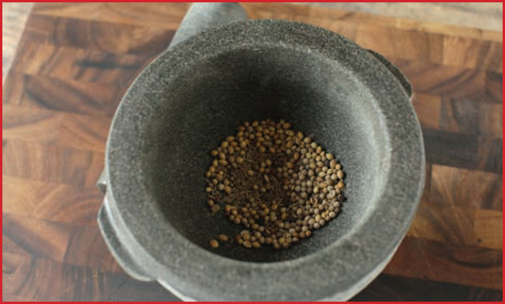
Place your whole spices in the bowl of the mortar and pestle. Make sure your mortar is on a firm surface. You’re going to be pounding.
Step 2 • Partially Cover the Bowl
Grab the pestle with your dominant hand and with the other cover the top of the mortar so that you create a slot for the pestle to move up and down in. This will help prevent whole spices from flying away.
Step 3 • Start Pounding
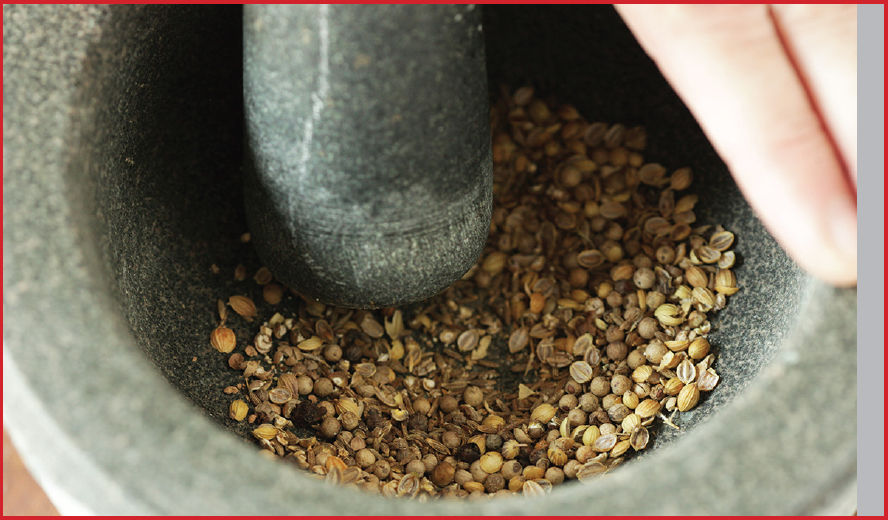
Pound the spices, trying to scrape your pestle along the sides of the mortar as you move up and down in order to trap and grind spices against the mortar’s walls. Continue pounding until most of the whole spices are at least roughly broken down. This should take 15 to 20 seconds.
Step 4 • Grind
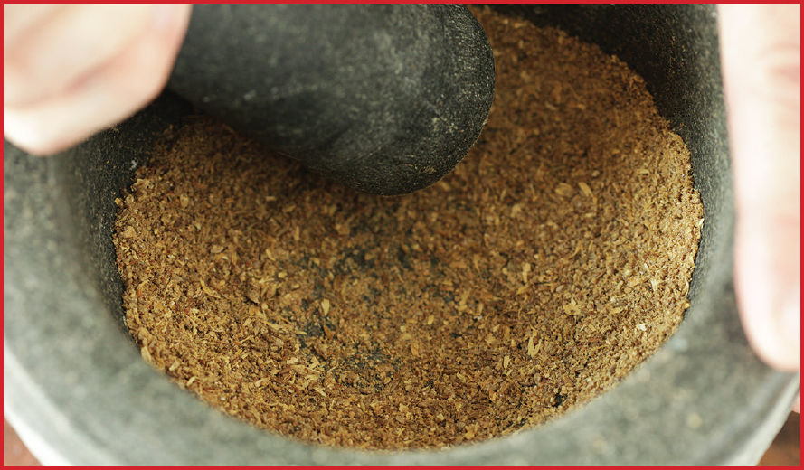
Grind the spices by holding the pestle firmly against the base of the mortar and pushing it around the bottom in a circular motion. Imagine an animatronic witch stirring her witch’s brew and you get the idea. As the pestle moves around, it should grind spices efficiently against the base of the mortar. Grind as fine as you’d like.
Step 5 • Sift (optional)
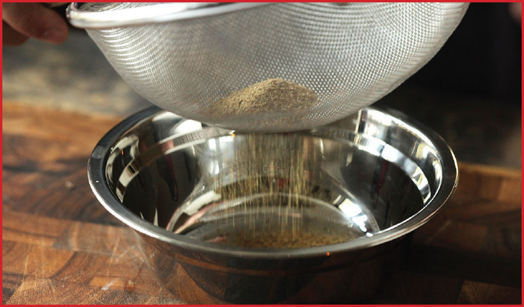
With certain spices—especially hulled spices like cumin or caraway seeds—you might find that the hulls of the seeds don’t get ground down as easily as the rest. This is OK. I typically use my spices directly as-is from the mortar, even if a few of those hulls make it into my food. They blend right in. If you prefer to remove them, however, you can tip the contents of your mortar into a fine-mesh strainer, then repeatedly tap the edge to let the ground spice drop through and the husks remain.
Pounding Aromatics
Whether it’s just some garlic and ginger for stir-fry, smashed anchovies and garlic for an in-the-mortar Caesar dressing, or a full-blown Thai curry paste, I break out the mortar and pestle any time I want to transform solid wet ingredients into a paste. Here’s how you do it.
Step 1 • Precut the Ingredients
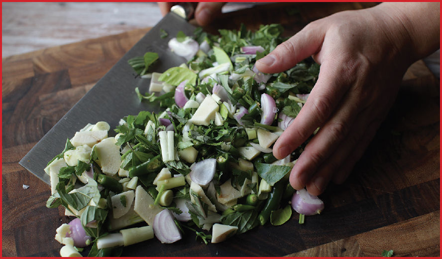
Peel and trim your aromatics as necessary, then chop them into relatively fine pieces. With tender aromatics like fresh chiles or garlic, a rough chop is fine. For tougher aromatics like lemongrass or ginger, a fine mince will speed things along.
Step 2 • Salt and Pound
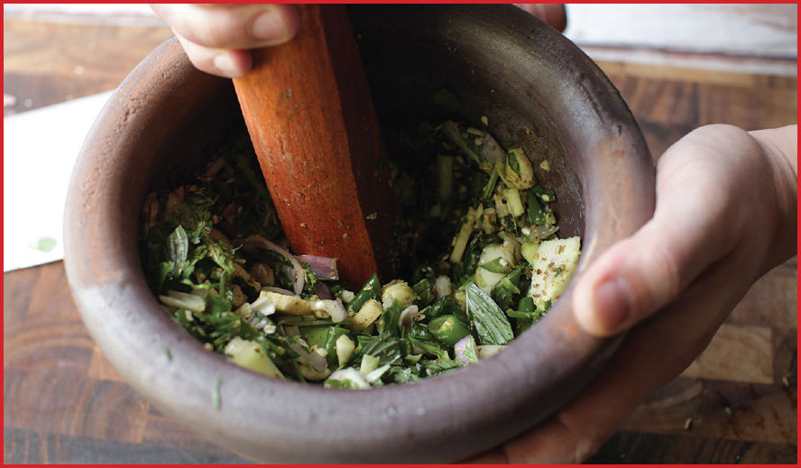
Salt acts as an abrasive, which helps tear up and break down those cell walls. Nearly any recipe that calls for a mortar and pestle will also call for salt, but in some cases (such as Nam Pla Prik (here). I use sugar as an abrasive instead.
Start pounding the aromatics, using your free hand to cover the top of the bowl to prevent spillage. Once the aromatics start to really break down you should be able to remove your hand. Continue pounding, aiming at the larger pieces and the sides of the mortar, trying to maximize scraping and contact between the mortar and pestle with each stroke.
Step 3 • Grind
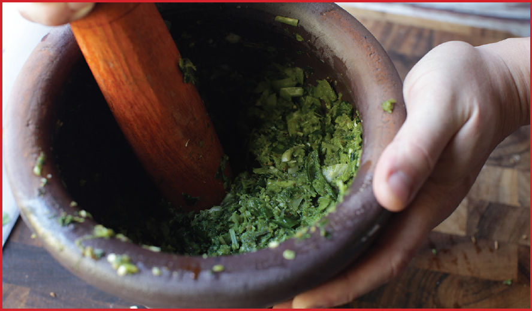
Once a moist paste starts to form, continue to break it down by turning the pestle around the mortar in a circular motion without letting it break contact with the mortar. With drier things like curry pastes, you may need to intersperse this motion with some more up-and-down pounds and scrapes.
Step 4 • Finish in the Food Processor (optional)
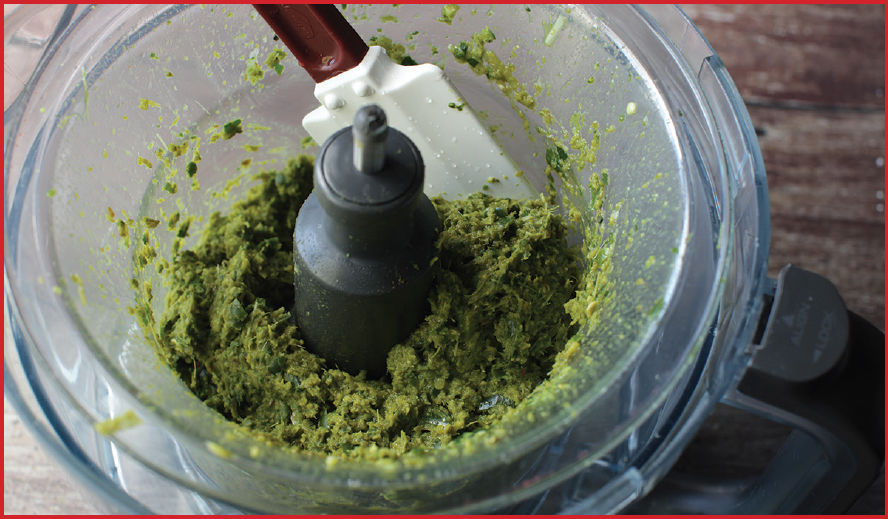
If you’ve got it in you, you can finish up directly in the mortar and pestle, but if you want to take the easy (and nearly as tasty) route, transfer the rough paste to a food processor and finish up by blitzing it until smooth.
Crushing Nuts
The mortar and pestle is easily the best and fastest way to crush or chop anywhere from a tablespoon to a cup and a half or so of nuts (more than that and the food processor starts to look a little more appealing).
Step 1 • Fill the Mortar
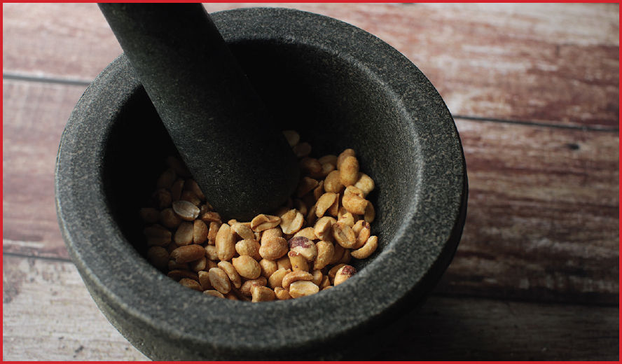
Add the nuts to the mortar, keeping them to below around the two-thirds line.
Step 2 • Partially Cover the Bowl
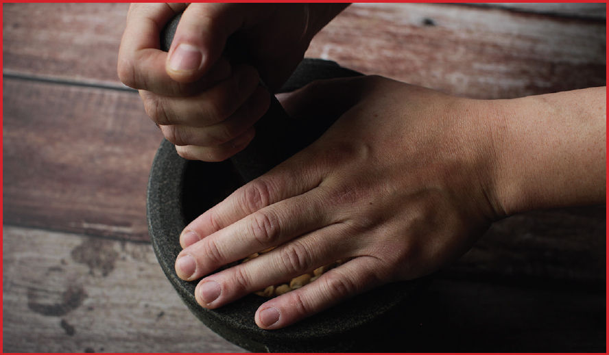
Grab the pestle with your dominant hand, and with the other cover the top of the mortar so that you create a slot for the pestle to move up and down in. This will keep the nuts in the bowl.
Step 3 • Crush
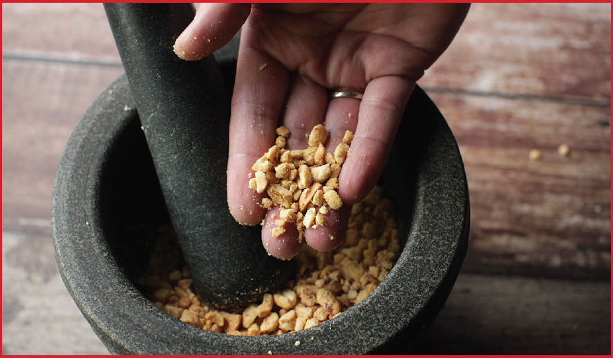
Pound the nuts with the pestle, aiming roughly at the larger pieces so that you end up with an even crush.
Cleaning and “Seasoning” a Mortar and Pestle
When I recommend using a mortar and pestle, many people show a reluctance to use one because they’ve heard that a new mortar and pestle needs to be seasoned or requires special care when washing. The seasoning process involves grinding the pestle into the mortar to remove any bits of excess grit or rock that might come off into your food. The good news is that of the dozens of mortars and pestles I’ve owned and used, only one ever actually needed to be seasoned before use, and that was my Mexican basalt molcajete. Granite, ceramic, wood, and metal mortars and pestles typically come grit-free and ready to use.
To test whether your mortar and pestle needs seasoning before use, rinse out the mortar, then fill it with clean water a quarter of the way. Grind the pestle into the mortar using a circular motion for a few moments, then check the water. Is it clear? You’re good to go. Does it come out cloudy with visible bits of grit? If so, season the mortar by grinding ¼ cup of white rice with a few tablespoons of water, grinding until it becomes a wet paste. Work the paste all over the interior surface of the mortar using the pestle for a few minutes, then drain, rinse, and do the clear water test again. Repeat this process until no grit comes off.
Washing a mortar and pestle is easy. The majority of the time, I just rinse mine out with water and a sponge, sometimes adding a little soap if there is any visible or smellable residue left in the bottom of the mortar.
The Best Mortar and Pestle
If I had to pick three pieces of technology to cook with for the rest of my life, a knife, fire, and a mortar and pestle would probably be it. This makes sense. At 100,000 to 150,000 years old, the mortar and pestle is one of our most ancient culinary tools and indeed, for tens of thousands of years we humans were working with a stone knife, a fire, and a mortar and pestle. They’ve been our best friends for three times as long as we’ve had dogs. They are a full order of magnitude older than agriculture itself. They have been used by every civilization in every corner of the globe, and to this day there’s nothing better for extracting the best flavor out of vegetal matter (though I’m sure Dave Arnold or Nathan Myhrvold would disagree).
There are all kinds of mortars and pestles out there made out of different materials with different finishes. I own at least a half dozen ranging from an Italian marble mortar with a smooth, lathed wooden pestle to a Japanese ceramic suribachi with a hardwood pestle, to a Mexican-style molcajete. My favorite mortar and pestle, the one that I turn back to nine times out of ten, is my Thai-style granite mortar and pestle. It has a large 3-cup-plus capacity, is heavy enough that it won’t move even with the most aggressive pounding, it has a heavy pestle that does a lot of the work for you, and it has an unpolished interior surface, which is what you want for effectively crushing cells. (Just think: would you rather be smashed by a wave against a smooth beach or against craggy rocks? Good. The opposite is what you want for your plant cells.)
I have yet to find one brand that is particularly better than another, as long as it meets the solid granite, 3 -cup-plus capacity requirements. You can find them at a good Asian supermarket or online for around $40 to $50.
Once you’ve got your mortar and pestle home, there’s not much you need to do with it. Some sets will have to be “seasoned” by grinding wet dry rice in them before use to pull out any bits of trapped sand or rock and to break off any jagged edges. Most sets these days come preseasoned, so all you need to do is rinse them out and you’re good to go. Some folks say not to wash mortars and pestles with soap. I think those folks have never made an oil-based sauce in theirs, or perhaps they don’t mind their pesto tasting like curry paste. Wash it however you want. It’s a hunk of rock; it’s not going to get damaged.
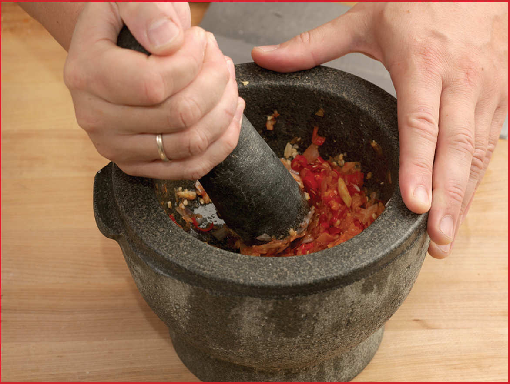
*I know I promised in the introduction that there would be no further puns, but how could I pass this one up?
*In fact, I even tried using an Indian wet mill, designed for crushing grains and pulses into wet batters. Unfortunately, curry paste is too thick, even for their heavy stone mills.
†I admit, embarrassingly, that in my first book I recommended not just using a food processor for pesto but also blanching the basil. The result is vibrant green, but I no longer follow that process. Use Daniel’s recipe instead.